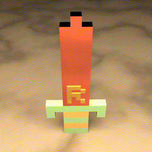
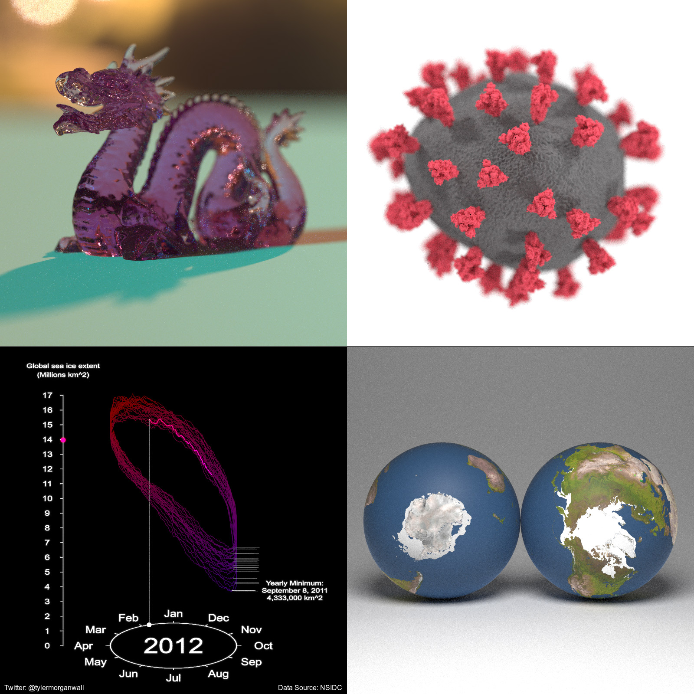

Overview
rayrender is an open source R package for raytracing scenes in created in R. This package provides a tidy R interface to a fast pathtracer written in C++ to render scenes built out of an array of primitives and meshes. rayrender builds scenes using a pipeable iterative interface, and supports diffuse, metallic, dielectric (glass), glossy, microfacet, light emitting materials, as well as procedural and user-specified image/roughness/bump/normal textures and HDR environment lighting. rayrender includes multicore support (with progress bars) via RcppThread, random number generation via the PCG RNG, OBJ/PLY support, and denoising support with Intel Open Image Denoise (OIDN).
Browse the documentation and see more examples at the website (if you aren’t already there):

Optional: denoising with Intel Open Image Denoise (OIDN)
rayrender can use Intel Open Image Denoise to denoise rendered images when OIDN is available on your system. If OIDN is not found, rayrender will still work, just without denoising support.
To get denoising support, you need to install OIDN. You can download the official binaries from Intel and set the OIDN_PATH argument in your .Renviron file with the following command line instructions:
macOS
# Download the appropriate binary for your architecture
curl -LO https://github.com/OpenImageDenoise/oidn/releases/download/v2.3.1/oidn-2.3.1.x86_64.macos.tar.gz
# or for Apple Silicon
curl -LO https://github.com/OpenImageDenoise/oidn/releases/download/v2.3.1/oidn-2.3.1.arm64.macos.tar.gz
# Extract the archive
tar -xvzf oidn-2.3.1.x86_64.macos.tar.gz
# or for Apple Silicon
tar -xvzf oidn-2.3.1.arm64.macos.tar.gz
# Set OIDN_PATH in your .Renviron file to the extracted directory
echo "OIDN_PATH=/path/to/extracted/oidn" >> ~/.Renvironlinux
# Download the binary
curl -LO https://github.com/OpenImageDenoise/oidn/releases/download/v2.3.1/oidn-2.3.1.x86_64.linux.tar.gz
# Extract the archive
tar -xvzf oidn-2.3.1.x86_64.linux.tar.gz
# Set OIDN_PATH in your .Renviron file to the extracted directory
echo "OIDN_PATH=/path/to/extracted/oidn" >> ~/.RenvironWindows (Rtools45)
Windows is slightly trickier and requires Rtools45. The steps are:
- Install
makeandninjavia RTools. - Install ISPC (Intel SPMD Program Compiler).
- Download the OIDN source repository.
- Compile and install OIDN, and point
rayrenderto it viaOIDN_PATH.
OIDN_PATH should point to a directory that contains include/OpenImageDenoise and lib (or lib64) with the OIDN libraries.
Install prerequisites
- Install Rtools45 https://cran.r-project.org/bin/windows/Rtools/
- Open the “Rtools45 MinGW UCRT64” shell (ucrt64) in RTools45.
- Inside that shell, install the build tools (including
make,ninja,cmake,git, andispc) viapacman:
pacman -Sy --needed \
mingw-w64-ucrt-x86_64-make \
mingw-w64-ucrt-x86_64-ninja \
mingw-w64-ucrt-x86_64-cmake \
mingw-w64-ucrt-x86_64-ispc- Make sure the Rtools static-posix toolchain and the MinGW binaries are on PATH (this mirrors the setup used to build OIDN):
- Verify the toolchain:
- Confirm ISPC is available:
Build and install OIDN from source (CPU-only)
All of the following commands are run from the Rtools45 ucrt64 shell:
# Download the OIDN source
git clone --recursive https://github.com/RenderKit/oidn.git
cd oidn
# Create a separate build directory
mkdir build-cpu-static
cd build-cpu-static
# Choose an install prefix; use a simple path without spaces
# This will become C:/local/oidn-static on Windows
OIDN_PREFIX="C:/local/oidn-static"
# Configure OIDN with the Rtools static-posix toolchain, CPU-only, static lib
# Update with your rtools45 path.
cmake \
-G "Ninja" \
-DCMAKE_BUILD_TYPE=Release \
-DCMAKE_C_COMPILER="/path/to/rtools45/x86_64-w64-mingw32.static.posix/bin/gcc.exe" \
-DCMAKE_CXX_COMPILER="/path/to/rtools45/x86_64-w64-mingw32.static.posix/bin/g++.exe" \
-DOIDN_STATIC_LIB=ON \
-DOIDN_DEVICE_CPU=ON \
-DOIDN_DEVICE_SYCL=OFF \
-DOIDN_DEVICE_CUDA=OFF \
-DOIDN_DEVICE_HIP=OFF \
-DOIDN_DEVICE_METAL=OFF \
-DOIDN_APPS=OFF \
-DISPC_EXECUTABLE="$(command -v ispc)" \
-DTBB_DIR="/path/to/rtools45/x86_64-w64-mingw32.static.posix/lib/cmake/TBB" \
-DCMAKE_INSTALL_PREFIX="${OIDN_PREFIX}" \
..If CMake cannot find TBB in Rtools automatically, add a hint such as:
(adjust the path for your actual Rtools45 install) to the cmake command above.
Then build and install:
After installation you should have, for example:
C:/local/oidn/include/OpenImageDenoise/oidn.h
C:/local/oidn/lib/libOpenImageDenoise.a (and related libs)Tell R where OIDN lives
In a regular Windows shell or PowerShell, add to your user .Renviron:
or edit the file and add the above manually with devtools::edit_r_environ().
Restart R (or your IDE), then reinstall rayrender from source:
devtools::install_github("tylermorganwall/rayrender", force = TRUE)After this, rayrender should detect OIDN during configure and enable denoising support on Windows.
Usage
We’ll first start by rendering a simple scene consisting of the ground, a sphere, and the included R.obj file. The location of the R.obj file can be accessed by calling the function r_obj(). First adding the ground using the render_ground() function. This renders an extremely large sphere that (at our scene’s scale) functions as a flat surface. We also add a simple blue sphere to the scene.